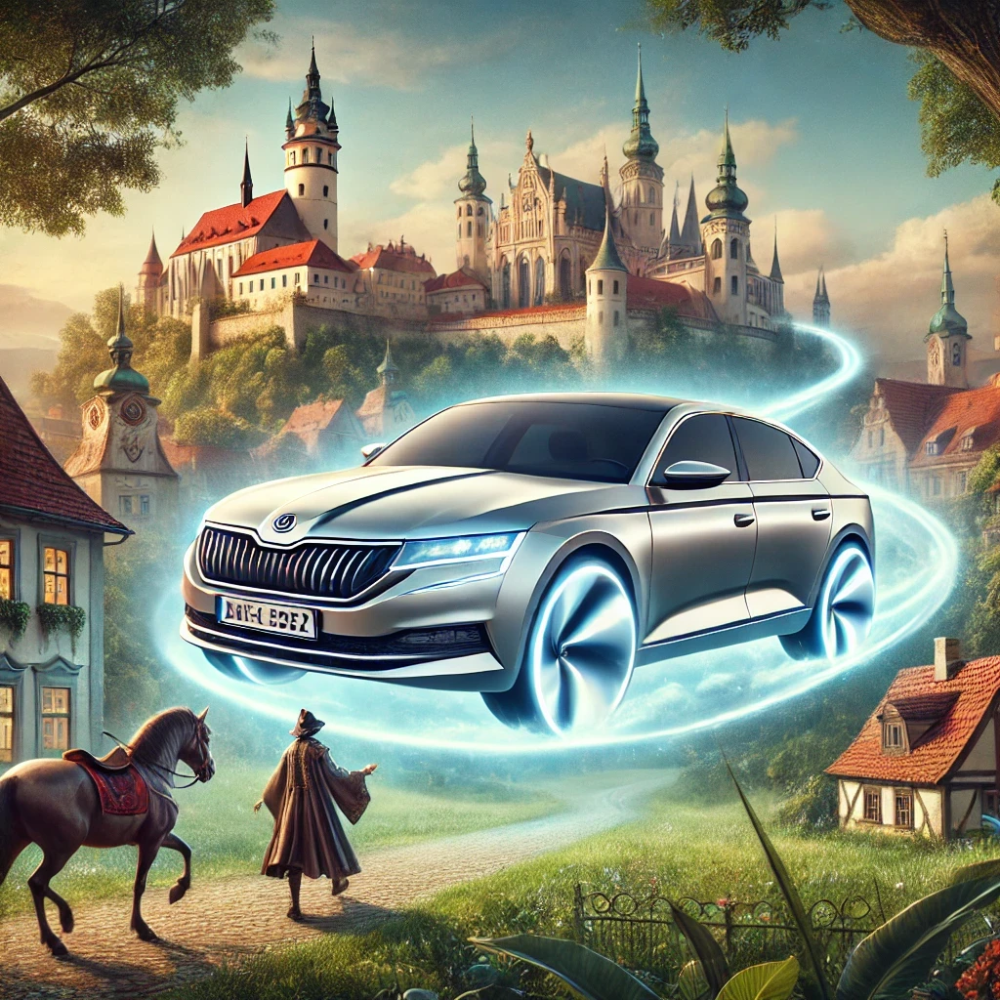
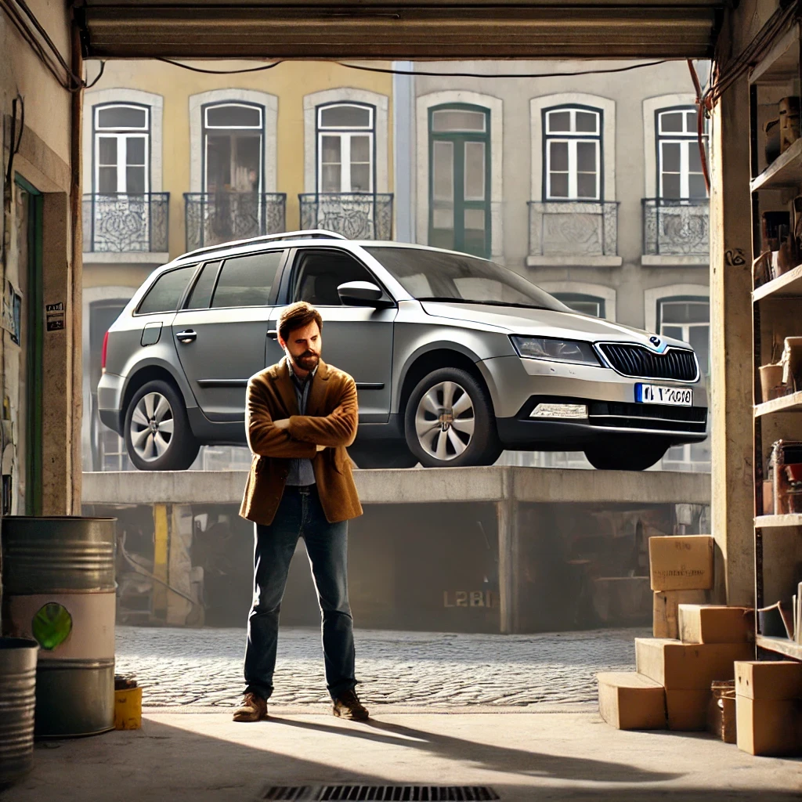
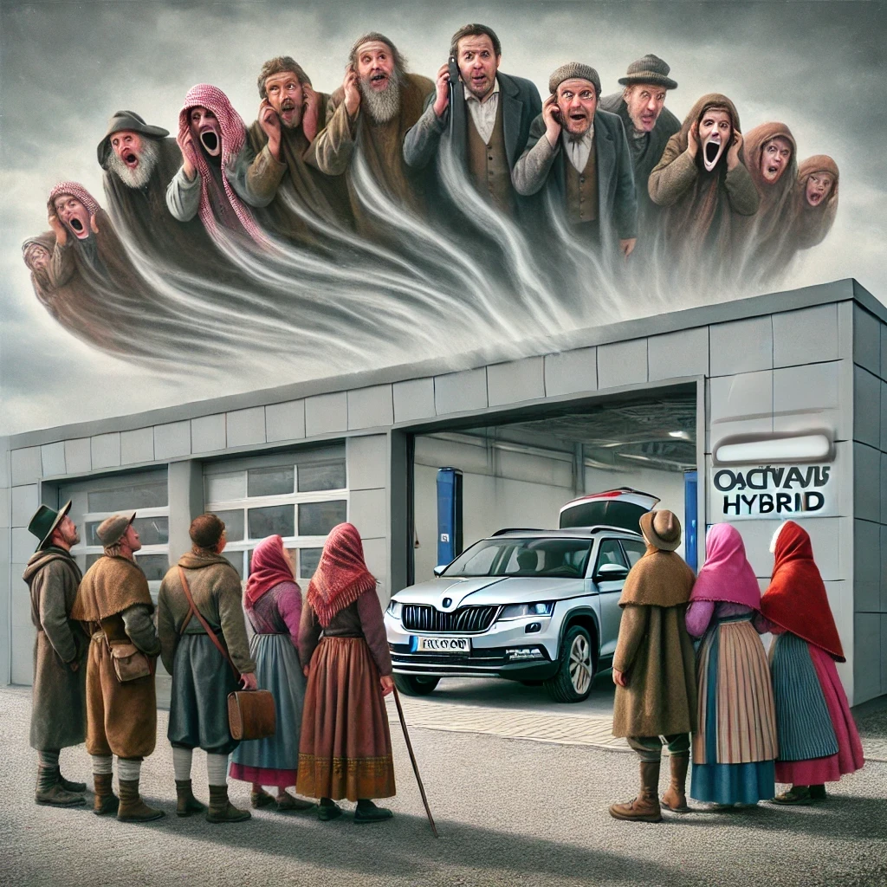
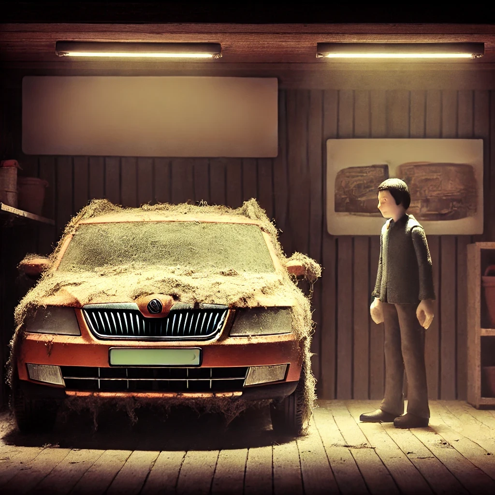
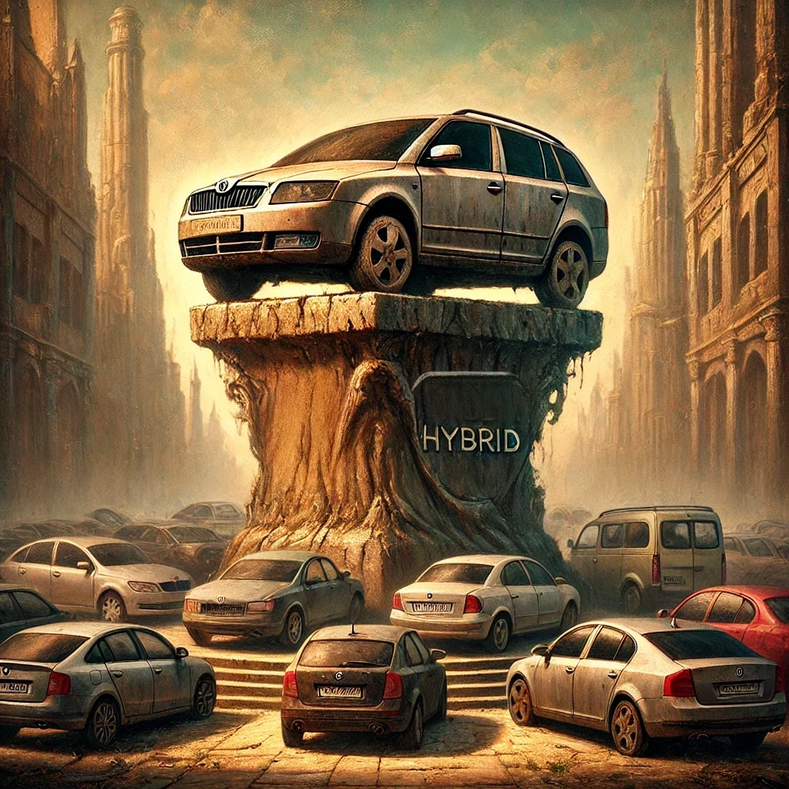
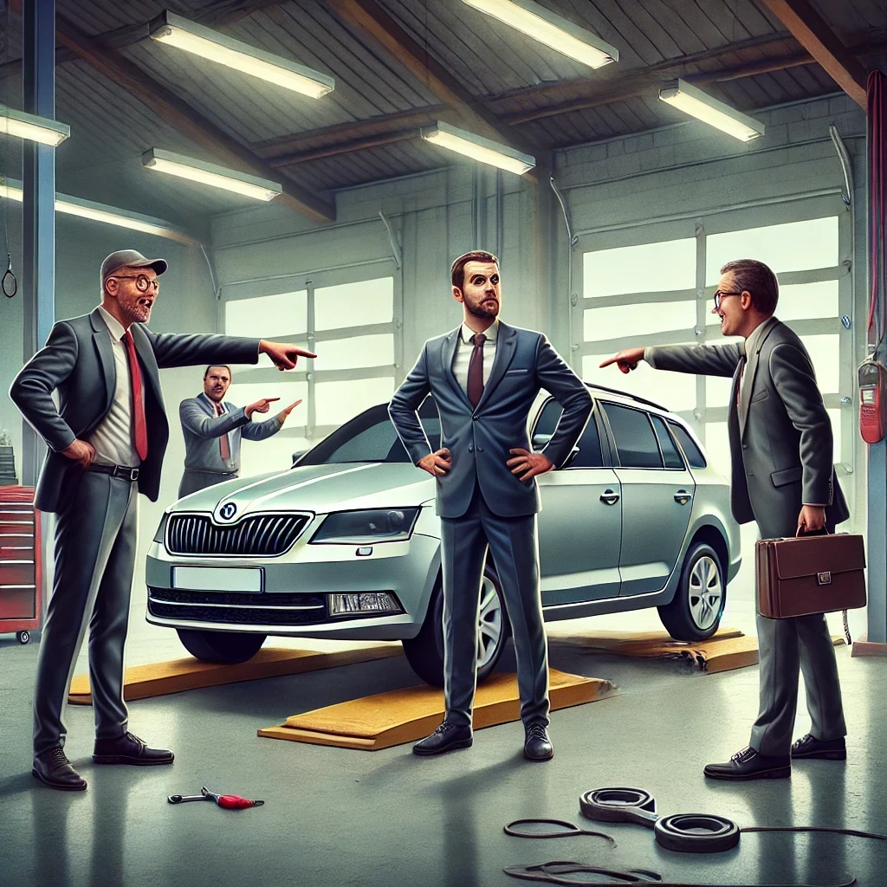

Quantos dias estou sem carro?
0 dias
Scroll down
↓A Lenda do André e o Carrinho de Ferro
Reza a lenda que, num reino não muito distante, um certo André se viu enredado num romance moderno com um veículo que prometia ser mais do que um mero meio de transporte. Não era apenas qualquer híbrido, mas um desses cavalos de ferro checos, que prometia deslizar sobre nuvens e sussurrar ao vento, prometendo uma harmonia entre natureza e máquina, exatamente como os que desfilam pelas ruas de Mladá Boleslav. 
Mas, ah! O destino, esse malandro, tinha outros planos. Logo após o enlace, este nobre carrinho de ferro começou a manifestar sinais de um encantamento amaldiçoado. Luzes que piscavam mais que estrelas cadentes numa noite de verão, um assobio que mais lembrava um grito angustiado dos espíritos do vale quando André baixava a janela do condutor, e um andar aos solavancos que sugeriam uma dança esquisita, talvez adequada para um baile sob a lua cheia. Problemas com a caixa de velocidades, barulhos estranhos no motor em baixas velocidades e uma instabilidade misteriosa em arranques em subida, tudo adornado por um sistema de travão de mão automático que parecia ter vida própria.

Já passaram mais de 61 dias — sim, mais tempo do que demora a encontrar um lugar de estacionamento em Lisboa — durante os quais o pobre André mal pôde sequer espreitar o seu valente carrinho de ferro. Conta a lenda que o nosso herói, armado com a paciência de um santo e a teimosia de um burro, enfrenta a interminável odisseia de tentar reaver o seu precioso investimento. 
"Será possível?", perguntam os aldeões. "Será que ele será reembolsado pelo carro e pelos prejuízos?" A resposta, sussurrada pelos ventos que ainda gritam através do vidro defeituoso, parece ser um eco distante de risadas vindas das salas de reunião onde decisões são perpetuamente adiadas. 
Reza a lenda que André ainda espera, talvez eternamente, pelo reembolso do seu mítico carrinho de ferro. A lenda também diz que este carro, que deveria ser um pilar de confiança, inovação e qualidade, é agora nada mais do que um belo artefato de decoração de garagem, um monumento à promessa de uma mobilidade que nunca se materializou. 
No reino dos híbridos, este enigmático carrinho de ferro será lembrado não pela suavidade da sua marcha, mas pelo sarcasmo amargo que inspirou no seu dono. 
Conclusão da História:
E assim, no reino dos híbridos, a lenda do carrinho de ferro de André continua. Reza a lenda que, enquanto o pobre veículo permanece aprisionado nas profundezas da oficina, os homens em trajes impecáveis, representantes das grandes entidades, continuam o seu eterno jogo de apontar o dedo.
Cada um deles, com a confiança de quem acredita estar acima da responsabilidade, empurra a culpa para o outro, numa dança burocrática sem fim. Enquanto isso, André, o herói desta odisseia, vê a paciência e o tempo esgotarem-se, numa espera que parece interminável.
No final, o verdadeiro vilão desta história não é o carro que falhou, mas sim o constante apontar de dedos que transformou uma simples questão técnica numa saga sem resolução. O carrinho de ferro, outrora uma promessa de inovação e qualidade, agora serve apenas como um lembrete amargo de que, muitas vezes, a verdadeira batalha não é contra as máquinas, mas contra a inércia daqueles que deveriam garantir o seu bom funcionamento.
E assim, a lenda continua, com o carrinho de ferro a enferrujar lentamente no limbo, à mercê dos ventos da indecisão e do eterno jogo de culpas. 